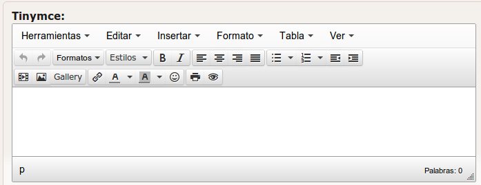
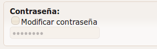

El generador de la base de datos nos sirve para adaptar nuestras tablas de la Base de datos a la interfaz del Klear, según la función de los campos de la tabla.
Para ello, empleamos TAGS que introducimos en los comentarios de los campos y así el Klear pueda identificarlos y adaptarlos a nuestra interfaz o viceversa.
Una vez tengamos las bases de datos con sus correspondientes tags generadas mediante phing, podremos ejecutar el Generador de BD.
Este tag de usa en Primary Keys ‘binary(36)’ con el cual se MySQL genera identificadores unicos en formato:
‘00000000-0000-0000-0000-000000000000’
Tiene la misma funcionalidad que el tag [uuid] con la diferencia que el Primary Key se genera desde la clase UUID en la libreria ‘Iron\Utils’. En las tablas en las que hay algçun archivo, se debe utilizar este tag en lugar del [uuid]
Usado por: “db-generator”
Genera los campos necesarios para introducir los metadatos de los archivos que se guardan en la carpeta STORAGE (creada al mismo nivel de la carpeta Application con todos los permisos).
Los campos que genera son:
Prudencia
Recomendamos no hacer uso de este tag de forma manual a menos que tengas experiencia creando los campos necesarios para su funcionamiento.
Campo creado con el “db-generator” por el tag [uuid]. Campos que son requeridos con este tag:
Este tag admite modificadores que permiten definir el comportamiento del fichero.
Usado por: “db-generator” y el “model-mappers-generator”
Multiplica el campo según la cantidad de idiomas que se ha configurado en el klear.ini, y listos para ser identificados por el generador MODEL-MAPPERS.
Usado por: “db-generator”
Genera los campos necesarios para hacer hacer uso de Mapas en nuestra interfaz.
Los campos que genera son:
Este tag funciona como elegir un campo del tipo ENUM, es una formato opcional por si se quiere evitar problemas a la hora de trabajar con valores del tipo null o false.
Usado por: “yaml-generator” y “model-mappers generator”
Usado por: “model-mappers generator”y “yaml-generator”
Como su nombre lo dice, es un tag para ignorar un campo por completo, por si no queremos añadirlo en nuestra interfaz y no hace falta hacer uso de ello con Klear.
Usado por: “yaml-generator”
Convierte el campo, en la interfaz del Klear, un editor que incluirá códigos HTML en los textos.
Usado por: “yaml-generator”
Convierte el campo, en la interfaz del Klear, el típico input del type=pass para ocultar los textos que es escrita en ellas.
Usado por: “yaml-generator” y “model-mappers generator”
Genera un nombre único en la tabla según el nombre del campo al que se relacione. Por ejemplo, si lo relacionamos con un campo que contiene el nombre “Este será mi primer comentario”, se guardará automáticamente el texto “este-sera-mi-primer-comentario” en el campo. Muy útil para trabajar con URLs con nombres amigables y así reemplazar las IDs.
Usado por: “model-mappers generator” y “yaml generator”
Al pasar el model-mappers generator por una columna con este tag, genera 3 nueva columnas con las siguientes nombres:
Usado por: model-mappers generator
Ignora la tabla por completo. Por si su uso solo está relacionado con otra aplicación.
En la carpeta del Generador (/opt/klear-development/generator), aplicar el siguiente código para aplicar los cambios necesarios a la base de datos.
$ php klear-db-generator.php -a ../../myProyect/web/application/
Nota
Normalmente no se utilizan los generadores de bases de datos directamente si no que se hace a través de Phing. Para modificar la base de datos hay que crear un archivo con las sentencias SQL necesarias en la carpeta phing/deltas y ejecutar el siguiente comando desde la carpeta phing:
$ phing db-change
Este comando se encargará de ejecutar los generadores de bases de datos.
Si estamos descargando los cambios que alguien ha hecho y ha comiteado, en lugar del comando anterior ejecutar el siguiente, ya que no necesitamos que se vuelvan a generar los archivos yaml ni php que se generan con el comando anterior, ya que ya los hemos descargados:
$ phing migrate